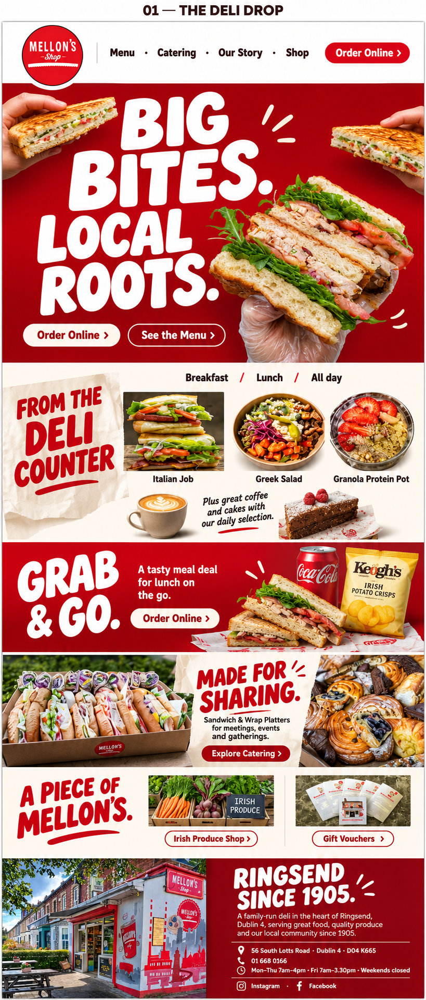
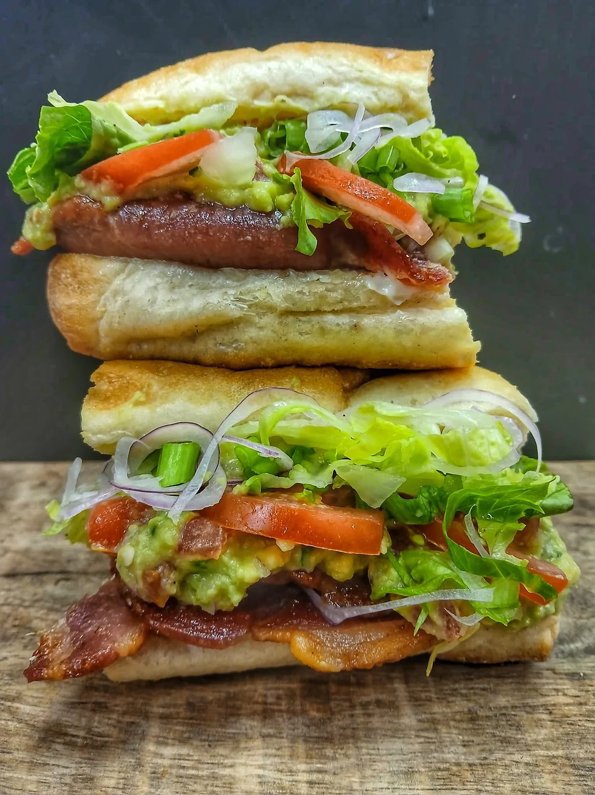
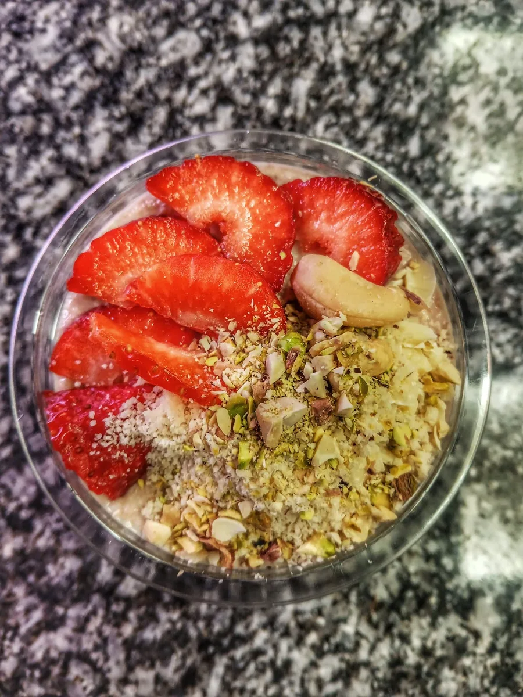

Mellon’s Shop & Deli · Ringsend, Dublin
The Deli Drop
Um cartaz de balcão em movimento, do Classic Club no hero à fachada da esquina. Use este guia para conferir a direção aprovada e abrir o site entregue.


Seis cenas
Big Bites. Local Roots.
Headline em escada. Três recortes entram em ritmos diferentes.
From the Deli Counter
Tomate cru cruza a emenda e vira sanduíche. O papel abre para a bancada.
Grab & Go.
O embrulho abre para o combo fotografado pela loja.
Made for Sharing.
Duas bandejas chegam ao painel em papel, uma de cada lado.
A Piece of Mellon’s.
Duas janelas de loja mostram a estampa e o voucher.
Ringsend Since 1905.
A fachada real encontra o bloco de endereço, horário e contato.
Marca e escala
Lilita One para as manchetes; Public Sans para menu, links e texto.
- Vermelho da marca#F31820
- Vermelho do site#B30D1B
- Papel#FBF7F1
- Tinta#251916
A composição central para em 1024 px; o hero mantém título de 92 px e foto principal de 550 px acima da base. No celular as camadas se reorganizam.
Do menu real
Originais da empresa, com cópias otimizadas no site. As máscaras do hero só alteram o recorte.



